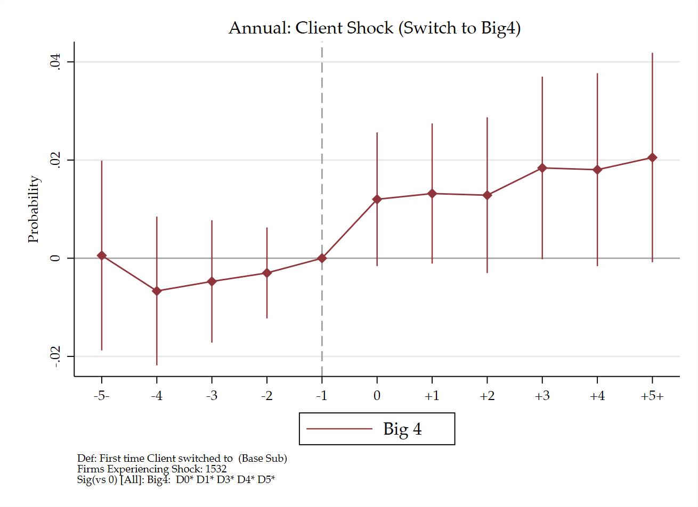
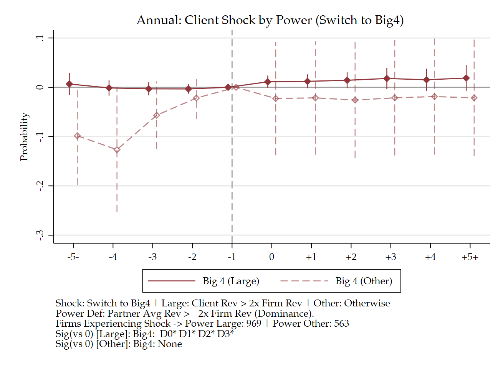
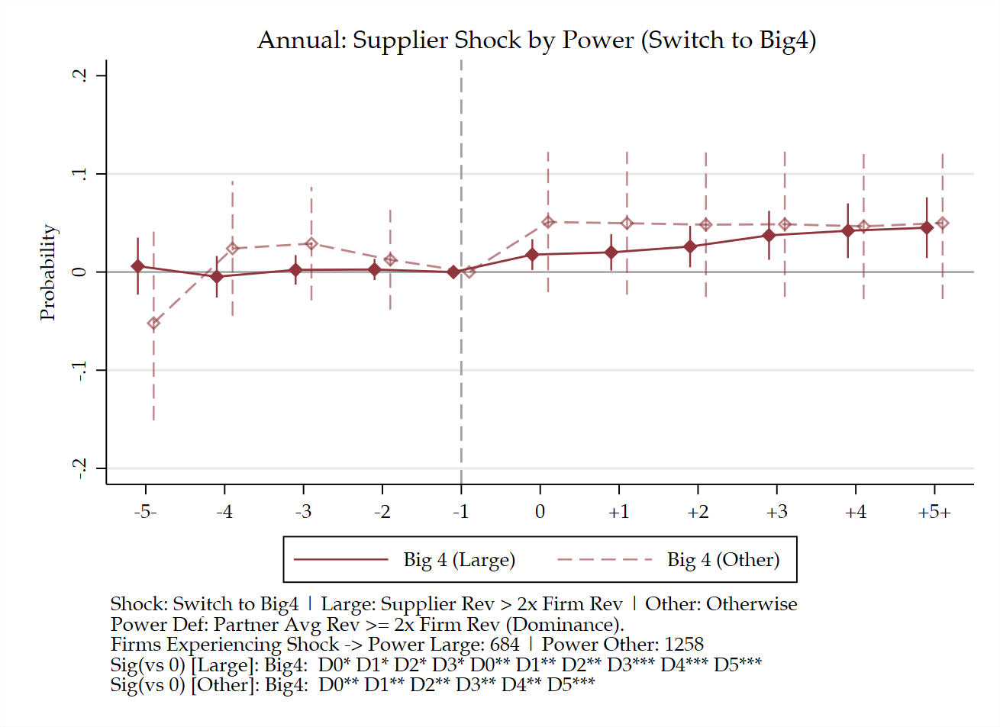
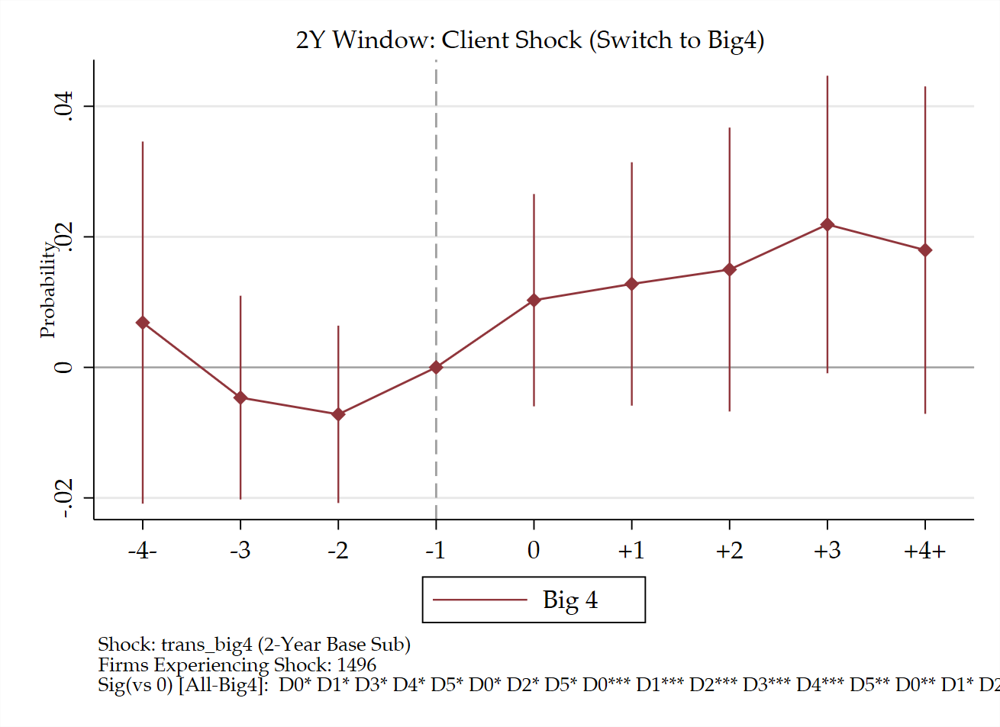
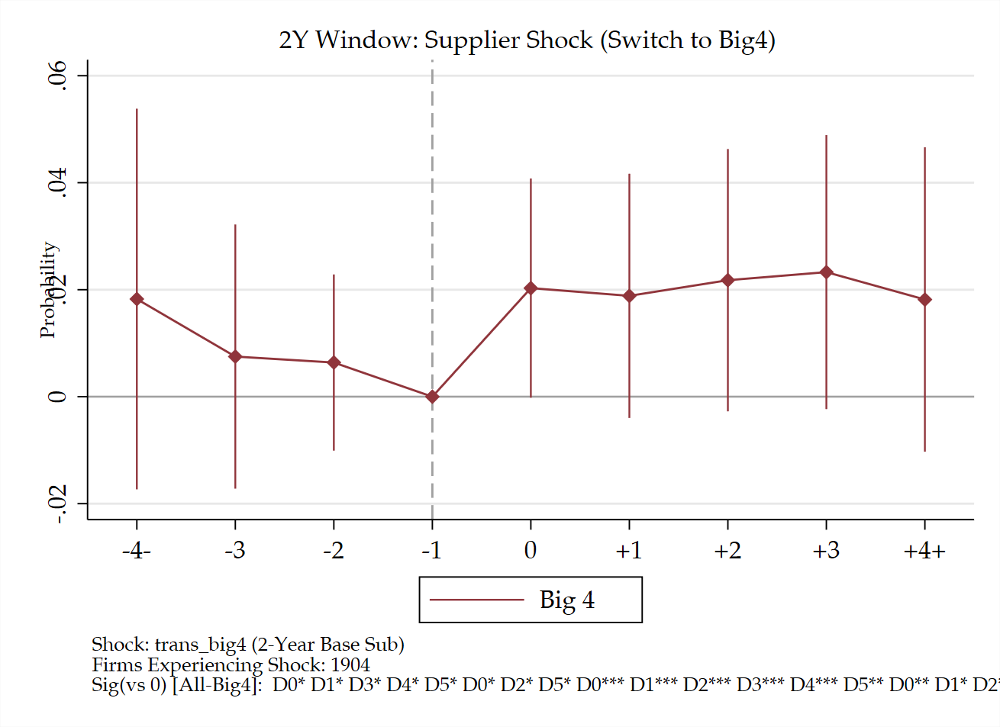
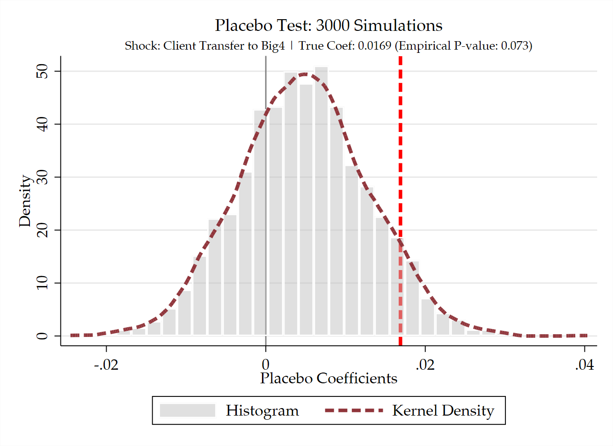
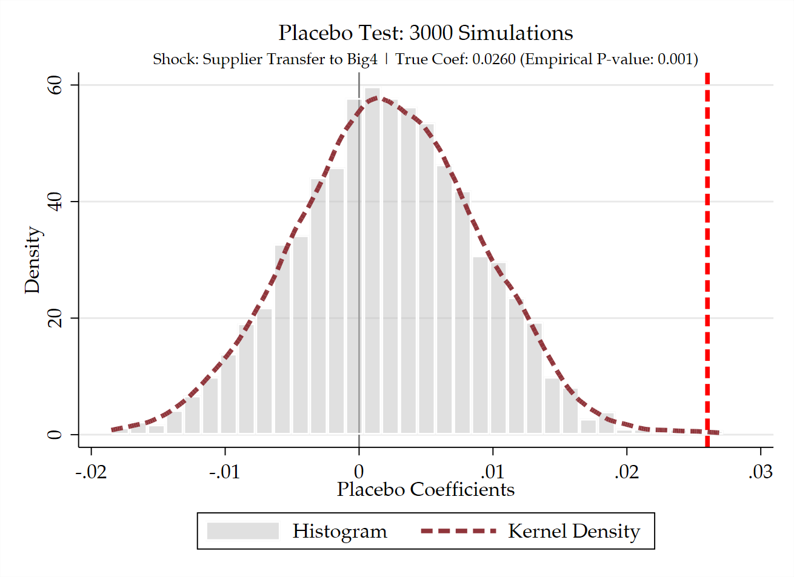

企业网络传导
概述
本章考察四大采用是否沿客户—供应商网络传播，连接企业自身的审计需求与网络中的服务采用扩散。网络选择和共同冲击尚未排除，不将采用扩散写成服务质量外溢。
核心结果
我们采用 staggered event study 检验四大采用在供应链中的网络传导。基本结论是：贸易伙伴转向四大后，焦点公司随后采用四大的概率显著上升，且供应商侧（supplier shock）的拉动效应明显强于客户侧（client shock）。
回归方程与设定
对供应商和客户冲击分别估计两向固定效应模型：
\[ \operatorname{Big4}_{it} = \sum_{k \in \{-5,\ldots,5\} \setminus \{-1\}} \beta_k^s \cdot \mathbf{1}\{t - T_i^s = k\} + \alpha_i + \lambda_t + \varepsilon_{it}, \qquad s \in \{\mathrm{supplier}, \mathrm{client}\}. \]
因变量 \(\operatorname{Big4}_{it}\) 为焦点公司 \(i\) 在 \(t\) 年是否聘请四大；\(T_i^s\) 为其供应链伙伴首次转向四大的年份。事件窗口取 \([-5, +5]\) 并对两端做 endpoint binning（合并 \(k \le -5\) 与 \(k \ge 5\)），基期为 \(k = -1\)。模型吸收 firm FE 和 year FE，标准误在 firm level 进行 cluster。基准回归未加入额外财务控制变量。
样本
基于 A 股上市公司披露的供应链关系构建 firm-year 面板。以贸易伙伴首次跃迁至四大的时点识别处理：供应商冲击的处理组包含 1,942 家焦点公司，客户冲击包含 1,532 家；对照组由从未处理（not treated）与尚未处理（not yet treated）的公司构成。
结果与动态特征
- Pre-trends：在 \(k \le -2\) 期间，估计系数紧密围绕 0 波动且均不显著，满足 parallel trends 假定；
- Post-treatment 动态效应：供应商换所当期（\(k=0\)），焦点公司采用四大的概率立即跳升，并在后续 1~5 年内稳定在 2.5~3.0 个百分点的高位（\(p < 0.01\)）；
- 上下游非对称性：客户侧在 \(k \ge 1\) 同样显著转正，但幅度相对温和（约 1.5~2.0 个百分点），呈现出明显的 upstream-to-downstream 传导特征。


回归设定。 当前年度网络回归仅含事件虚拟变量，下文方程中的 \(X\) 在该规格为空；年度 FE 为公司和年份，两年一期为公司和两年期，均按公司聚类。程序将两端事件时间合并，基期为 −1。两年一期的事件窗口是 −4 至 +4 个两年期。年度基准代码未增加额外财务控制；随机网络和 Monte Carlo 抽样程序见第 6 节。
设定来源（只读快照）。 22_supplychain_adoption_variants.do · 23_supplychain_adoption_placebo.do
1. 供应链网络与基本事实
研究问题与当前发现。 供应链网络以公司披露的客户—供应商关系为基础。对每一家焦点公司，分别定义其客户或供应商首次转向四大的年份；该年份构成网络伙伴的审计质量冲击。研究对象不是伙伴自身的审计师选择，而是与该伙伴相连公司的审计师采用是否在随后发生变化。
回归／统计设定。 单位为焦点公司—年，因变量为事务所类别采用。伙伴事件虚拟变量进入 TWFE，公司和年份 FE、公司聚类；当前年度命令无额外控制。 变量与回归设定。
设 \(PartnerBig4_{it}^k\) 表示公司 \(i\) 的客户或供应商在相对事件时间 \(k\) 首次转向四大的暴露指标，\(Y_{it}\) 为公司 \(i\) 在年份 \(t\) 的审计师质量结果。主回归为：
\[ Y_{it}=\sum_{k\neq -1}\beta_k PartnerBig4_{it}^k+X_{it}'\gamma+\mu_i+\lambda_t+\varepsilon_{it}. \]
其中，\(k=-1\) 为事件前一年，\(X_{it}\) 为当前规格的时变控制变量，\(\mu_i\) 和 \(\lambda_t\) 分别为公司与年份固定效应。基准结果令 \(Y_{it}=Big4_{it}\)。
网络传导的解释要求伙伴审计师转换不是由焦点公司与伙伴共同面对的未观测冲击机械驱动。因此，Monte Carlo 随机事件与异质性检验是识别设计的重要部分。
2. 供应商转向四大的传导效应
研究问题与当前发现。 供应商侧事件定义为：与公司相连的供应商首次由非四大转向四大。年度事件研究中，事件前系数没有持续的正向偏离；事件当年及之后，焦点公司采用四大的概率上升，并在多个后续时期保持为正。
回归／统计设定。 供应商首次转向四大的网络暴露；处理公司数为 1,942 家。年度公司、年份 FE，公司聚类；合并 ±5 两端，无额外控制。 变量与回归设定。

结果解释与识别局限。 事件前估计系数紧密在零线附近波动，平行趋势假定得到支持；事件当期（\(k=0\)）系数即跳升约 1.2 个百分点，并在随后 1 至 5 年内维持在 2.5~3.0 个百分点的显著正向水平。这一结果与供应商审计质量升级后，交易对手协同提升审计质量的传导解释一致；但也可能反映共同融资、共同国际化或行业共同冲击，需进一步通过异质性与安慰剂检验辨别。
3. 客户转向四大的传导效应
研究问题与当前发现。 客户侧事件定义为：与公司相连的客户首次由非四大转向四大。年度图显示，焦点公司采用四大的概率在事件后由接近零转为正，并在后续年份保持正向。
回归／统计设定。 客户首次转向四大的网络暴露；处理公司数为 1,532 家。其余年度设定同第 2 节。 变量与回归设定。
结果解释与识别局限。 客户侧同样表现出平稳的事前趋势（\(k \le -2\) 阶段无显著偏离）。在客户换所后次年（\(k \ge 1\)），焦点公司采用四大的概率显著转正，后续维持在 1.5~2.0 个百分点。相较供应商侧，客户侧点估计相对较小，呈现出上游向下游传导更显著的非对称特征。
4. 供应链地位异质性
研究问题与当前发现。 考察网络传导是否依赖于交易对手的相对议价能力与市场依赖度。
回归／统计设定。 按伙伴与焦点公司的相对营业收入比值（以 2 倍为界）分组，在原年度 FE 与公司聚类下分别估计。 变量与回归设定。
4.1 客户议价地位
大客户定义为客户营业收入超过焦点公司营业收入两倍的关系。大客户转向四大时，买方的监督或合规要求更有可能沿供应链向上游扩散。

4.2 供应商议价地位
大供应商定义为供应商营业收入超过焦点公司营业收入两倍的关系。该分组检验重要投入品交易对手是否具有更强的审计质量影响。

结果解释。 客户侧大客户组的采用概率跃升更为集中，与强势买方的合规监督假说一致；供应商侧两组均呈现出稳健的正向变化，表明投入品供应方的规范化对下游具有普遍的认证与示范效应。
5. 替代供应链定义
研究问题与当前发现。 检验基准结论对供应链关系筛选规则与时间聚合窗口的敏感性。
回归／统计设定。 分别采用去除招投标、仅保留报告披露后关系以及两年一期面板聚合规格。两年期吸收公司和两年期 FE、公司聚类，事件窗口为 −4 至 +4 个两年期。 变量与回归设定。
- 去除招投标公告：去除招投标公告来源的供应链关系，以降低单次项目合作或公告文本匹配造成的关系误识别；
- 仅使用报告披露后的关系：仅保留在公司报告披露后可确认的关系，避免使用事后信息定义事件时点，直接针对前视偏误；
- 两年一期：将关系与审计师选择按两年窗口聚合，降低年度关系披露噪声和短期跳变的影响。


结果解释。 在两年期聚合规格下，事件前系数维持平稳，事件后各周期呈现平滑的单调递增走势，证实基准发现对时间粒度的选取稳健。
6. Placebo 与因果推断检验
研究问题与当前发现。 检验基准结果是否由纯粹的时间序列巧合或随机波动机械驱动。
回归／统计设定。 保持公司与网络拓扑结构不变，对各公司经历冲击的事件年份进行 3,000 次随机打散重抽样（Monte Carlo 置换），构建经验虚无分布，并将真实静态系数置于该分布中进行推断比较。 变量与回归设定。


结果解释与识别局限。 客户侧的真实系数为 0.0169，经验 p 值为 0.073；供应商侧的真实系数为 0.0260，经验 p 值为 0.001。置换检验表明真实系数几乎不可能由随机事件时点产生，强力排除了时序巧合驱动的假设。但该检验主要针对时序维度的外生性，未能完全排除行业层面的共同冲击（common industry shocks），区分行业共同冲击仍是网络传导因果识别的关键边界。
数据、程序与输出记录
估计程序（存档）。 22_supplychain_adoption_variants.do · 23_supplychain_adoption_placebo.do